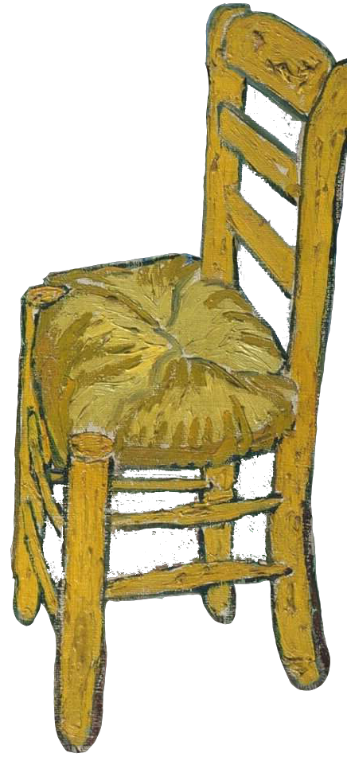

Биография
Родился будущий художник в маленькой голландской деревне под названием Грот-Зюндерт.
Это радостное событие в семье протестантского священника Теодора Ван Гога
и его жены Анны Корнелиус Ван Гог случилось 30 марта 1853 года.
В семье пастора было всего шестеро детей.
Винсент – самый старший.
Родные считали его трудным и странным ребенком,
в то время как соседи отмечали в нем скромность,
сострадание и дружелюбие в отношениях с людьми.
Впоследствии он не раз говорил о том,
что детство его было холодным и мрачным.
Религия
В поисках своего предназначения он отправился в Амстердам и
усиленно готовился к поступлению на теологический факультет.
Но вскоре он осознал, что ему здесь не место,
бросил учёбу и поступил в миссионерскую школу.
После её окончания в 1879 году ему предложили проповедовать Закон Божий
в одном из городов на юге Бельгии. Он согласился.
В этот период он много рисует, преимущественно портреты простых людей.
Творчество
После разочарований, постигших Ван Гога в Бельгии,
он вновь впал в депрессию. На помощь пришел брат Тео.
Он оказал ему моральную поддержку и помог поступить в Академию изящных искусств.
Там он проучился недолго и вернулся к родителям,
где продолжил самостоятельное изучение различных техник.
В этот же период он пережил и несколько неудачных романов.
Самым плодотворным временем в творчестве Ван Гога считается
парижский период (1886–1888 гг.). Он познакомился с яркими представителями
импрессионизма и постимпрессионизма: Клодом Моне, Камилем Писсарро, Ренуаром,
Полем Гогеном.
Он непрестанно искал свой стиль и вместе с тем изучал различные
техники современной живописи. Незаметно посветлела и его палитра.
От светлого к настоящему буйству красок, характерных для его полотен последних лет,
осталось совсем немного.
Произведения

Интересные факты